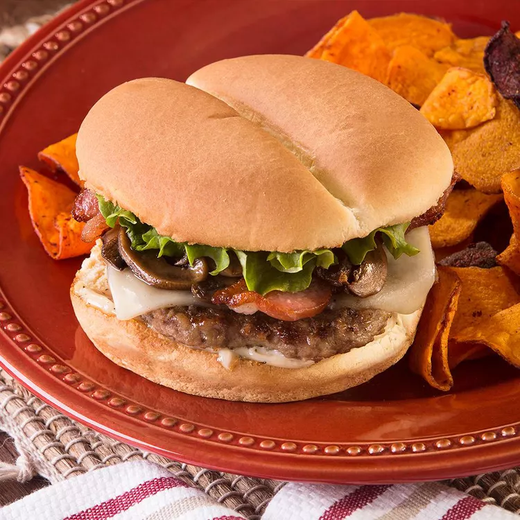

Home
Bacon Mushroom Swiss Burger Recipe

Description
This bacon-mushroom-Swiss burger recipe combines crisp, smoky bacon, earthy mushrooms, and melty Swiss cheese. The
herbed mayonnaise adds
instant sophistication, and toasting the buns gives an extra layer of texture.
Ingredients
- ½ cup mayonnaise
- 3 tablespoons herbes de Provence
- 2 teaspoons Worcestershire sauce
- 1 teaspoon lemon juice
- 8 ounces thick-cut smoked bacon, halved
- 8 ounces button mushrooms, sliced
- 1 tablespoon soy sauce
- 2 pounds lean ground beef
- 2 teaspoons garlic granules
- Salt and ground black pepper, to taste
- Slices of swiss cheese
- Hamburger buns
- Burger toppings (such as lettuce, tomato, onion, and pickles)